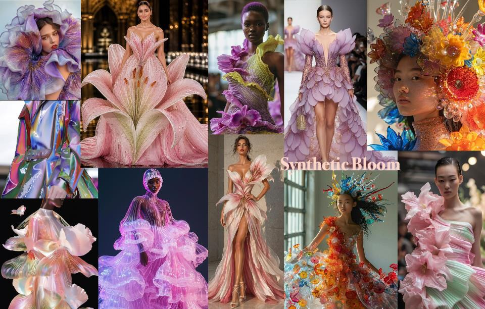
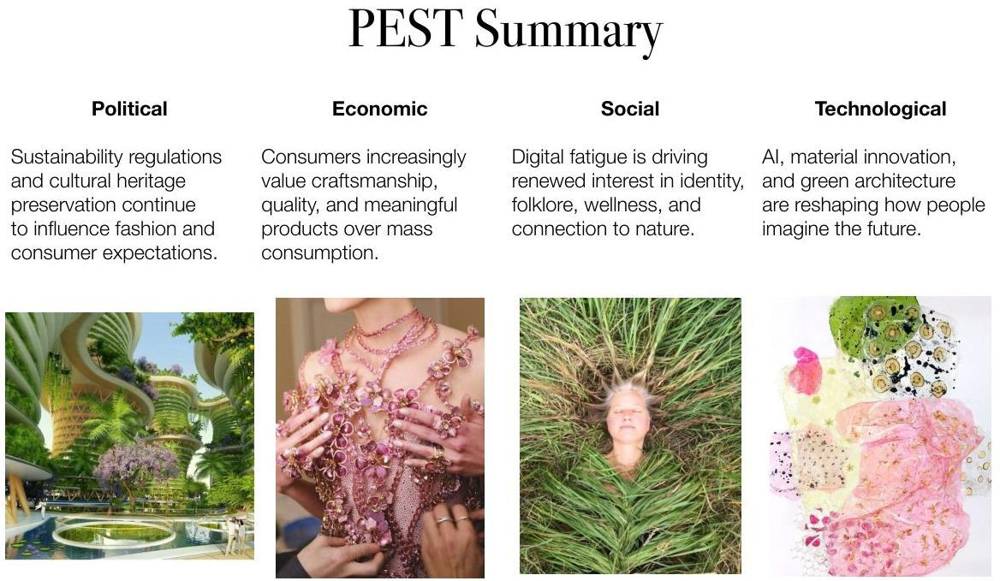
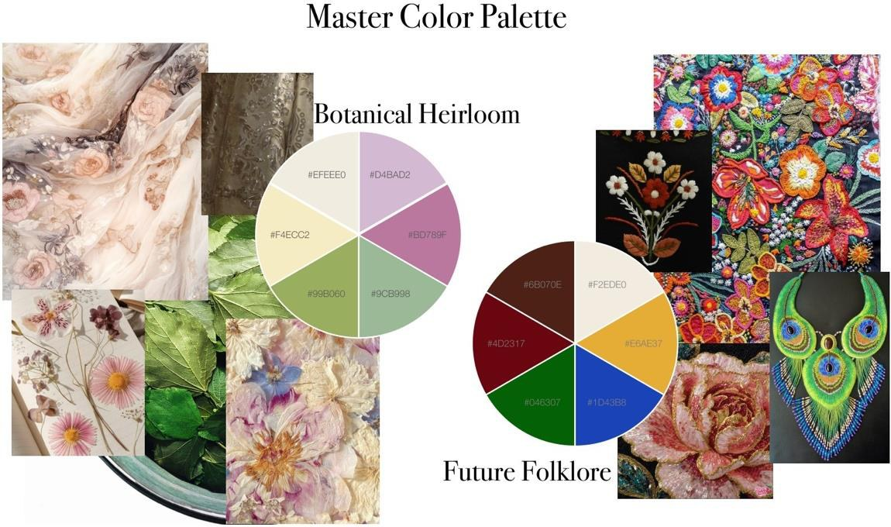
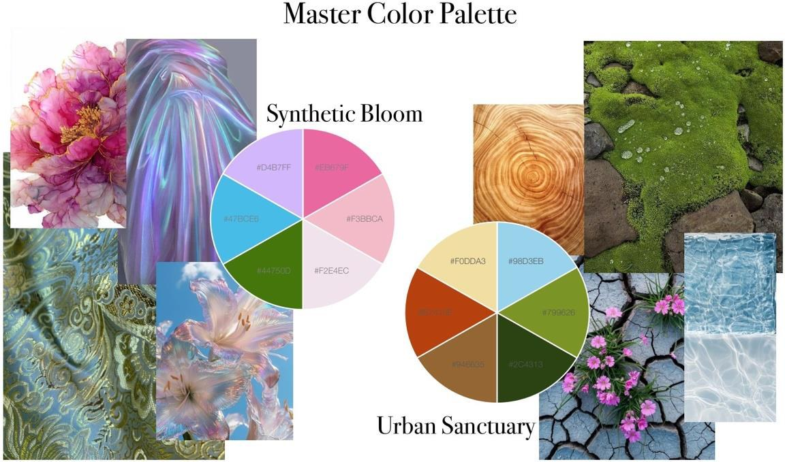
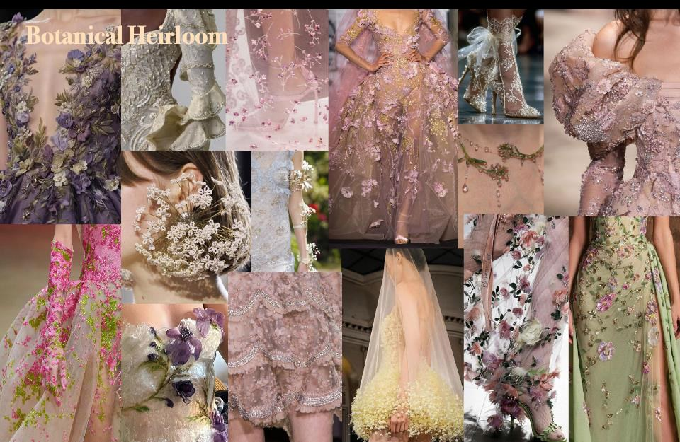
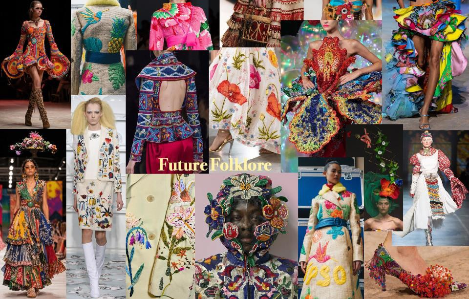
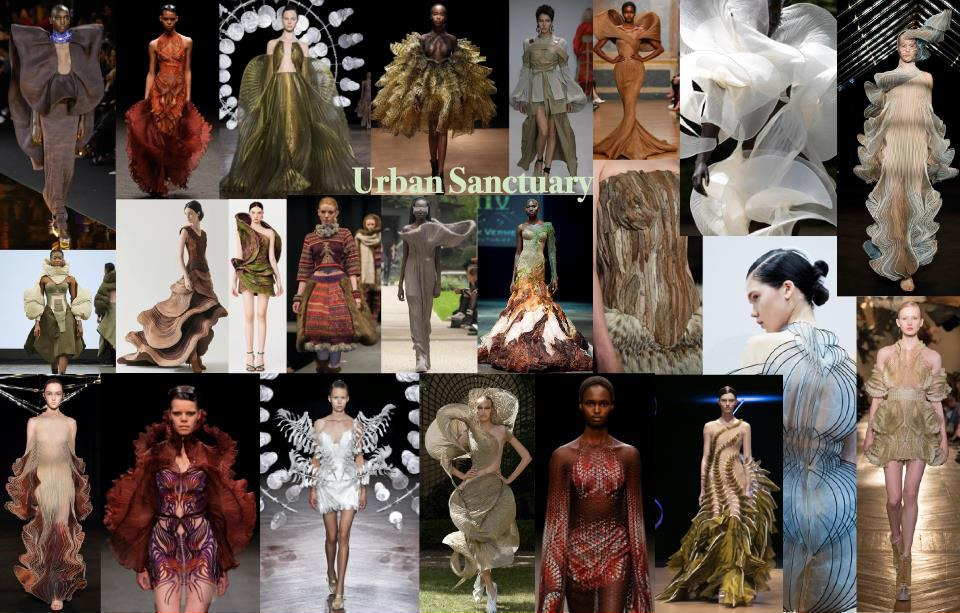

Rooted Futures
Trend Forecasting & Colour Direction
Where heritage, nature and innovation meet.

OVERVIEW
The idea.
Rooted Futures is a Spring/Summer 2027 womenswear trend forecast exploring how heritage and technological innovation can coexist in contemporary fashion. The direction responds to digital fatigue, renewed attention to craftsmanship, cultural identity, environmental responsibility and the natural world. Rather than rejecting technological progress, it asks how tradition and innovation might inform one another. Four interconnected subthemes give this idea distinct visual interpretations: Botanical Heirloom, Future Folklore, Synthetic Bloom and Urban Sanctuary. The forecast draws on a political, economic, social and technological analysis as well as fashion, architecture, art and cultural references. Colour palettes, material inspirations and curated imagery translate those wider influences into a coherent Spring/Summer visual language. The aim was to build a direction that feels nostalgic and future-facing at the same time.
A closer look.






PROCESS
From research
to realization.
I began by examining political, economic, social and technological forces that could influence Spring/Summer 2027 womenswear. My PEST analysis considered sustainability and heritage preservation, changing ideas about quality and consumption, digital fatigue, artificial intelligence, biomaterials and green architecture. I extended the research through fashion, art, architecture, cultural history, European folklore and Latin American craft traditions. I identified recurring drivers: cultural reconnection, interest in slower and more intentional creative processes, renewed appreciation for craftsmanship and growing interaction between technology and nature. These findings shaped the overarching Rooted Futures direction. I then developed four distinct subthemes. Botanical Heirloom focuses on romantic botanical details and traditional craft. Future Folklore draws on symbolism, cultural memory and artisanal techniques. Synthetic Bloom translates organic forms into digitally influenced futures, while Urban Sanctuary explores the relationship between cities and greenery. Finally, I assembled research boards and developed separate colour palettes for the four directions. I refined the imagery to make each theme recognizable while preserving a consistent relationship across the forecast.
REFLECTION
What I learned.
Rooted Futures confirmed how much I enjoy fashion research when it involves finding connections rather than only collecting beautiful references. The most rewarding part was translating cultural and technological influences into four visual stories with different emotional qualities. The main challenge was giving each subtheme its own identity without losing the overall coherence of the forecast. I learned to ask whether an image, texture or colour genuinely supported the concept before including it. Developing the PEST analysis also reinforced that fashion forecasting requires a rationale for the visual choices. The project strengthened my interest in trend research, colour direction and concept development, and showed me how analytical thinking can become a creative tool.